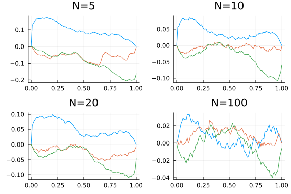
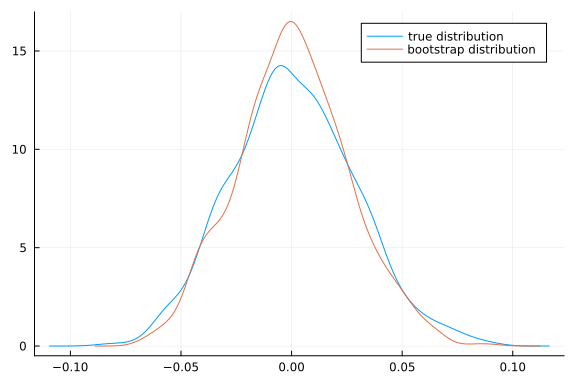
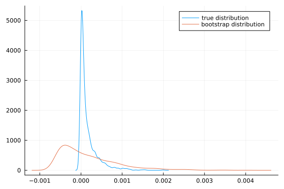
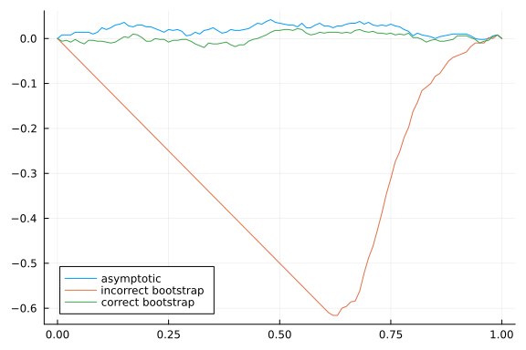
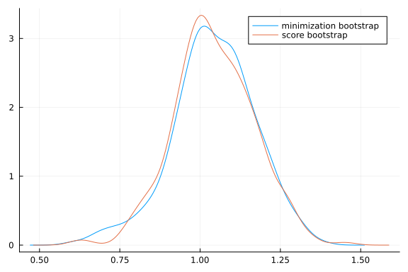
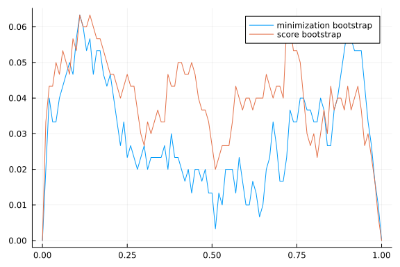

This work is licensed under a Creative Commons Attribution-ShareAlike 4.0 International License
About this document¶
This document was created using Weave.jl. The code is available in on github. The same document generates both static webpages and associated jupyter notebooks jupyter notebook.
Introduction¶
The bootstrap is a method of inference that utilizes resampling. The basic idea is as follows. Suppose you have some parameter of interest for which you want to do inference. Let $T_n$ denote some test statistic involving the estimator. The test statistic is a function of data, so the distribution of the estimator is a function of the distribution of data. Let $F_0$ denote the exact, finite sample distribution of the data. Let denote the exact finite sample distribution of the statistic. To do inference, we would like to know $G_n(\tau, F_0)$. This is generally impossible without strong assumptions. Asymptotics get around this problem by approximating $G_n(\tau, F_0)$ with its asymptotic distribution, $G_\infty(\tau,F_0)$. The bootstrap is an alternative approach (but the formal justification for the bootstrap still relies on asymptotics). The bootstrap approximates $G_n(\tau, F_0)$ by replacing $F_0$ with an estimate, $\hat{F}_n$. One common estimate of $\hat{F}_n$ is simply the empirical CDF. When observations are independent, we can randomly draw $T^\ast_n$ from $G_n(\tau, \hat{F}_n)$ by randomly drawing with replacement a sample of size $n$ from the orgininal observations, and then computing $T^\ast_n$ for this sample. We can do this repeatedly, and use the distribution of the resulting $\hat{\theta}^\ast_n$’s to calculate $G_n(\tau,\hat{F}_n)$.
As a quick example, here’s some code where the statistic is the sample median minus its true value.
using Plots, StatsPlots, Distributions, Optim, ForwardDiff, LinearAlgebra, GMMInference
Plots.gr();
dgp(n) = rand(n)
estimator(x) = median(x)
# simulating T ~ G_n(τ,F_0)
n = 1000
S = 999
T = [estimator(dgp(n)) for s in 1:S] .- 0.5
function bootstrap(data, estimator, S)
n = length(data)
θhat = estimator(data)
T = [estimator(sample(data,n, replace=true)) for s in 1:S] .- θhat
end
Tboot = bootstrap(dgp(n),estimator, S)
density(T, label="true distribution")
density!(Tboot, label="bootstrap distribution")

References¶
Mackinnon (2006)1 and MacKinnon (2009)2 are good practical introductions to the bootstrap. Horowitz (2001)3 is also a good overview, and includes more precise statements of theoretical results, but does not contain proofs. The lecture notes of Shi (2012)4 are another very good overview. Gine (1997)5 is a rigorous and fairly self-contained theoretical treatment of the bootstrap.
Although the bootstrap works in many situations, it does not always work. For example, Abadie and Imbens (2008)6 show the failure of the bootstrap for matching estimators. See Andrews (2000)7, Andrews and Han (2009)8, and Romano and Shaikh (2012)9 for theoretical developments on situations where the bootstrap fails and alternatives that work. Hall (1994)10 gives a theoretical overview of when the bootstrap provides asymptotic refinement. Chernozhukov, Chetverikov, and Kato (2017)11 discusses the bootstrap in high dimensional models.
Theory¶
This section follows the approach Van der Vaart (2000)12. We focus on the case where $T_n = \frac{\hat{\theta}_n - \theta_0}{\hat{\sigma}_n}$ is a t-statistic. A simple and useful result is that if $T_n$ and $T^\ast_n$ both converge to the same distribution, then the bootstrap is consistent.
Theroem: bootstrap consistency
Suppose that and conditional on the data, for some random variable $T$ with a continuous distribution function. Then and in particular,
Proof sketch: $T_n$ and $T_n^\ast$ both $\leadsto T$ immediately implies $G_n(\tau, F_0) \inprob G_\infty(\tau)$ and $G_n(\tau,\hat{F}n) \inprob G\infty(\tau)$ , where $G_\infty(\tau)$ is the CDF of $T$ . This implies that $G^{-1}n(\tau,\hat{F}_n) \inprob G^{-1}\infty(\tau)$ for all $\tau$ where $G_\infty$ is continuous. Then we have
This theorem is very simple, but it is useful because it suggest a simple path to showing the consistency of the bootstrap: simply show that $T_n^\ast$ has the same asymptotic distribution as $T_n$. Here is a simple result for when $T_n^\ast$ is constructed by sampling with replacement from the empirical distribution. We will let $\mathbb{P}_n$ denote the empirical distribution, and $x_i^\ast$ denote draws of $x_i$ from it.
Lemma
Let $x_1, x_2, …$ be i.i.d. with mean $\mu$ and variance $\sigma^2$. Then conditional on $x_1, …$ for almost every sequence
Proof sketch it is straightforward to show that $\Er[x_i^\ast | \mathbb{P}_n] = \bar{x}_n$ and $Var(x_i^\ast|\mathbb{P}_n) = \bar{x^2}_n - \bar{x}_n^2 \to \sigma^2$. Applying the Lindeberg CLT then gives the result.
Pivotal statistics¶
The above results imply that the bootstrap works for both $S_n = \sqrt{n}(\bar{x}_n - \mu_0)$ and “studentized” a statistic $T_n = \sqrt{n}(\bar{x}_n - \mu_0)/\hat{\sigma}_n$. There is some advantage to using the later. A statistic is called pivotal if its distribution is completely known. If we assume $x_i \sim N$, then $T_n$ is pivotal and has a t-distribution. If we aren’t willing to assume normality, then the distribution of $T_n$ is unknown, but its asymptotic distribution is completely known, $N(0,1)$. Such a statistic is called asymptotically pivotal. $S_n$ is not asymptotically pivotal because its asymptotic distribution depends on the unknown variance. It is possible to show that the bootstrap distribution of asymptotically pivotal statistics converge faster than either the usual asymptotic approximation or the bootstrap distribution of non-pivotal statistics. See Hall (1994)10 for details.
Here is a simulation to illustrate.
dgp(n) = rand(Exponential(),n)
estimator(x) = mean(x)
θ0 = 1.0
N = [5 10 20 100]
B = 999
function simulatetests(n)
function bootstrap(data, stat, S)
n = length(data)
T = [stat(sample(data,n)) for s in 1:S]
end
data = dgp(n)
t = sqrt(n)*(mean(data)-θ0)/std(data)
[cdf(Normal(),t),
mean(t.<bootstrap(data, d->(sqrt(n)*(mean(d) - mean(data))/std(d)), B)),
mean((mean(data)-θ0) .< bootstrap(data, d->(mean(d)-mean(data)), B))]
end
res=[hcat([simulatetests.(n) for s in 1:1000]...) for n in N]
p = 0:0.01:1
global fig = plot(layout=4, legend=:none)
for i=1:4
plot!(fig,p, p->(mean(res[i][1,:].<p)-p), title="N=$(N[i])",
label="asymptotic", subplot=i)
plot!(fig,p, p->(mean(res[i][2,:].<p)-p), title="N=$(N[i])",
label="pivotal bootstrap", subplot=i)
plot!(fig,p, p->(mean(res[i][3,:].<p)-p), title="N=$(N[i])",
label="non-pivotal boostrap", subplot=i)
end
fig

This figure shows the simulated CDF of p-values minus p. For a perfectly sized test, the line would be identically 0. The blue lines are for the usual t-test. Green is from bootstrapping the non-pivotal statistic $\sqrt{n}(\bar{x}^\ast - \bar{x})$. Red is from bootstrapping a pivotal t-statistic. As expected, the red line is closer to 0, illustrating the advantage of bootstrapping a pivotal statistic.
Bootstrap does not always work¶
It is important to remember that the bootstrap is not guaranteed to work. A classic example is estimating the mean squared. Let $x_i \sim F_0$, where$F_0$ is any distribution with mean $\mu$ and variance $\sigma^2$. The parameter of interest is $\theta = \mu^2$. The estimator will be $\hat{\theta} = \bar{x}^2$. The delta method and CLT imply similarly conditional on the data, $$ \sqrt{n}(\bar{x^\ast}^2 - \bar{x}^2) \indist 2 \mu N(0,\sigma^2)$ $$ A problem occurs when $\mu=0$. The limiting distributions become point masses at 0. The CDF is no longer continuous, so the theorem above does not apply.
Here’s an illustration
function bootmeansquared(μ0, n)
dgp(n) = rand(n) .- 0.5 .+ μ0
estimator(x) = mean(x)^2
S = 1000
T = [estimator(dgp(n)) for s in 1:S] .- μ0^2
function bootstrap(data, estimator, S)
n = length(data)
θhat = estimator(data)
[estimator(sample(data,n,replace=true)) for s in 1:S] .- θhat
end
Tboot = bootstrap(dgp(n),estimator, S)
density(T, label="true distribution")
density!(Tboot, label="bootstrap distribution")
end
bootmeansquared(0.5,100)

bootmeansquared(0.0,500)

Depending on the random numbers drawn (in particular, whether the simulated sample mean is very close to 0 or not), the above picture may look okay or terrible for the bootstrap. Try running it a few times to get a sense of how bad it might be.
Bootstrap for GMM¶
Joint hypotheses¶
The failure of the bootstrap for the mean squared when the true mean is 0 has important implications for GMM. In particular, the AR statistic,
is essentially a mean squared. If we naively attempt to apply the bootstrap by computing
we will get incorrect inference. The problem is that we want to test $H_0: \Er[g_i(\theta)] = 0$, but in the bootstrap sample,
For the bootstrap to work, we must ensure that the null hypothesis is true in the bootstrap sample, we can do this by taking
where $\bar{g}_n(\theta) = 1/n \sum g_i(\theta)$.
Here is a simulation to illustrate. It uses the same IV-logit share example as in the extremum estimation notes.
n = 100
k = 2
iv = 3
β0 = ones(k)
π0 = vcat(I,ones(iv-k,k))
ρ = 0.5
data = IVLogitShare(n,β0,π0,ρ)
function arstat(gi)
n = size(gi)[1]
gn = mean(gi,dims=1)
W = pinv(cov(gi))
n*( gn*W*gn')[1]
end
function ar(θ,gi)
n,m = size(gi(θ))
1.0-cdf(Chisq(m), arstat(gi(θ)))
end
function bootstrapAR(θ,gi)
giθ = gi(θ)
gn = mean(giθ,dims=1)
n = size(giθ)[1]
S = 999
T =hcat([ [arstat(giθ[sample(1:n,n,replace=true),:]),
arstat(giθ[sample(1:n,n,replace=true),:].-gn)
] for s in 1:S]...)'
t = arstat(giθ)
[1-cdf(Chisq(length(gn)),t) mean(T.>=t, dims=1)]
end
function simulatetests()
data = IVLogitShare(n,β0,π0,ρ)
bsp=bootstrapAR(β0, get_gi(data))
end
simulatetests (generic function with 2 methods)
pvals = vcat([simulatetests() for s in 1:500]...)
p = 0:0.01:1.0
plot(p, p->(mean(pvals[:,1].<p)-p), label="asymptotic", legend=:bottomleft)
plot!(p, p->(mean(pvals[:,2].<p)-p), label="incorrect bootstrap")
plot!(p, p->(mean(pvals[:,3].<p)-p), label="correct bootstrap")

With the same sort of modification the KLM and CLR statistics can also be bootstrapped. All three statistics remain identification robust when bootstrapped. See Kleibergen (2006)14 for details.
Single coefficients¶
If we want to construct a confidence interval for a single coefficient, we can apply the bootstrap to a statistic like $\sqrt{n} (\hat{\theta} - \theta_0)$ (or a studentized version of it). Just like in the previous subsection, we must be careful to ensure that the null hypothesis holds in the bootstrapped data. Also, as above, we can do this by subtracting $1/n\sum_i g_i(\hat{\theta})$ from the bootstrapped moments. Thus, one way to bootstrap is $\sqrt{n} (\hat{\theta} - \theta_0)$ is to
- Compute $\hat{\theta}$, $\bar{g}_n(\theta) = 1/n\sum_i g_i(\hat{\theta})$
- Draw with replacement $g_i^\ast(\theta)$ from ${g_i(\theta) - \bar{g}n(\theta)}^n$.
- Compute
- Use distribution of $\sqrt{n} (\hat{\theta}^\ast - \hat{\theta})$ to approximate $\sqrt{n} (\hat{\theta} - \theta_0)$
For some models, the minimazation needed to compute $\hat{\theta}^\ast$ can be very time consuming. Fortunately, it can be avoided. A key step in showing that $\hat{\theta}$ is asymptotically normal is a linearization
Showing the bootstrap estimator is asymptotically normal conditional on the data involves a similar linearization
This suggests taking
instead of re-minimizing.
function gmmVar(θ,gi,W)
g = gi(θ)
n = size(g)[1]
D = ForwardDiff.jacobian(θ->mean(gi(θ),dims=1),θ)
Σ = cov(gi(θ))
1/n*inv(D'*W*D)*(D'*W*Σ*W*D)*inv(D'*W*D)
end
function bsweights(n)
s = sample(1:n,n)
(x->sum(x.==s)).(1:n)
end
function bootstrapt(θ,gi, W)
giθ = gi(θ)
gn = size(giθ)[1]
D = ForwardDiff.jacobian(θ->mean(gi(θ),dims=1),θ)
function bootonce(θ,gi)
giθ = gi(θ)
n = size(giθ)[1]
gn = mean(giθ,dims=1)
w = bsweights(n)
giw(θ) = (gi(θ).*w .- gn)
gmmobj = gmm_objective(giw, W)
opt1 = optimize(gmmobj, θ, BFGS(), autodiff =:forward)
θs1 = opt1.minimizer
θs2 = θ - inv(D'*W*D)*(D'*W*( (mean(giθ.*w,dims=1).-gn)' ))
[θs1[1] θs2[1]]
end
S = 299
vcat([bootonce(θ,gi) for s in 1:S]...)
end
bootstrapt (generic function with 1 method)
n = 50
k = 2
iv = 3
β0 = ones(k)
π0 = vcat(I,ones(iv-k,k))
ρ = 0.5
data = IVLogitShare(n,β0,π0,ρ)
gi = get_gi(data)
W = I
optres = optimize(gmm_objective(data,W), β0, BFGS(),
autodiff = :forward)
θhat = optres.minimizer
θs = bootstrapt(θhat,gi,I)
density(θs[:,1], label="minimization bootstrap")
density!(θs[:,2], label="score bootstrap")

function simulatetests()
data = IVLogitShare(n,β0,π0,ρ)
gi = get_gi(data)
W = I
optres = optimize(gmm_objective(gi,W), β0, BFGS(), autodiff =:forward)
θhat = optres.minimizer
θs = bootstrapt(θhat,gi,I)
p = mean((θhat[1]-β0[1]).<(θs .- θhat[1]), dims=1)
end
pvals = vcat([simulatetests() for s in 1:300]...)
p = 0:0.01:1.0
fig=plot(p, p->(mean(pvals[:,1].<p)-p),
label="minimization bootstrap", legend=:best)
plot!(fig,p, p->(mean(pvals[:,2].<p)-p), label="score bootstrap")
fig

Both versions of the bootstrap appear to work well enough here. Note that neither one is robust to identification problems. Inference on a subset of parameters while remaining robust to identification problems is somewhat of an open problem. Various conservative approaches are available, the simplest of which is to just take projections of the AR, KLM, or CLR confidence sets. There are also more powerful approaches for situations where you know which parameters are strongly vs weakly identified.
References¶
-
James G. MacKinnon. Bootstrap methods in econometrics*. Economic Record, 82(s1):S2–S18, 2006. URL: https://onlinelibrary.wiley.com/doi/abs/10.1111/j.1475-4932.2006.00328.x, arXiv:https://onlinelibrary.wiley.com/doi/pdf/10.1111/j.1475-4932.2006.00328.x, doi:10.1111/j.1475-4932.2006.00328.x. ↩
-
James G MacKinnon. Bootstrap hypothesis testing. Handbook of Computational Econometrics, 183:213, 2009. URL: http://citeseerx.ist.psu.edu/viewdoc/download?doi=10.1.1.1033.330&rep=rep1&type=pdf#page=203. ↩
-
Joel L. Horowitz. Chapter 52 - the bootstrap. In James J. Heckman and Edward Leamer, editors, Handbook of Econometrics, volume 5 of Handbook of Econometrics, pages 3159 – 3228. Elsevier, 2001. URL: http://www.sciencedirect.com/science/article/pii/S157344120105005X, doi:https://doi.org/10.1016/S1573-4412(01)05005-X. ↩
-
XiaoXia Shi. Lecture 10: bootstrap. 2012. URL: https://www.ssc.wisc.edu/~xshi/econ715/Lecture_10_bootstrap.pdf. ↩
-
Evarist Gine. Lectures on some aspects of the bootstrap, pages 37–151. Springer Berlin Heidelberg, Berlin, Heidelberg, 1997. URL: https://doi.org/10.1007/BFb0092619, doi:10.1007/BFb0092619. ↩
-
Alberto Abadie and Guido W. Imbens. On the failure of the bootstrap for matching estimators. Econometrica, 76(6):1537–1557, 2008. URL: https://onlinelibrary.wiley.com/doi/abs/10.3982/ECTA6474, arXiv:https://onlinelibrary.wiley.com/doi/pdf/10.3982/ECTA6474, doi:10.3982/ECTA6474. ↩
-
Donald W. K. Andrews. Inconsistency of the bootstrap when a parameter is on the boundary of the parameter space. Econometrica, 68(2):399–405, 2000. URL: https://onlinelibrary.wiley.com/doi/abs/10.1111/1468-0262.00114, arXiv:https://onlinelibrary.wiley.com/doi/pdf/10.1111/1468-0262.00114, doi:10.1111/1468-0262.00114. ↩
-
Donald W. K. Andrews and Sukjin Han. Invalidity of the bootstrap and the m out of n bootstrap for confidence interval endpoints defined by moment inequalities. The Econometrics Journal, 12(s1):S172–S199, 2009. URL: https://onlinelibrary.wiley.com/doi/abs/10.1111/j.1368-423X.2008.00265.x, arXiv:https://onlinelibrary.wiley.com/doi/pdf/10.1111/j.1368-423X.2008.00265.x, doi:10.1111/j.1368-423X.2008.00265.x. ↩
-
Joseph P. Romano and Azeem M. Shaikh. On the uniform asymptotic validity of subsampling and the bootstrap. Ann. Statist., 40(6):2798–2822, 12 2012. URL: https://doi.org/10.1214/12-AOS1051, doi:10.1214/12-AOS1051. ↩
-
Peter Hall. Chapter 39 methodology and theory for the bootstrap. In Handbook of Econometrics, volume 4 of Handbook of Econometrics, pages 2341 – 2381. Elsevier, 1994. URL: http://www.sciencedirect.com/science/article/pii/S157344120580008X, doi:https://doi.org/10.1016/S1573-4412(05)80008-X. ↩↩
-
Victor Chernozhukov, Denis Chetverikov, and Kengo Kato. Central limit theorems and bootstrap in high dimensions. Ann. Probab., 45(4):2309–2352, 07 2017. URL: https://doi.org/10.1214/16-AOP1113, doi:10.1214/16-AOP1113. ↩
-
Aad W Van der Vaart. Asymptotic statistics. Volume 3. Cambridge university press, 2000. ↩
-
Peter Hall. Chapter 39 methodology and theory for the bootstrap. In Handbook of Econometrics, volume 4 of Handbook of Econometrics, pages 2341 – 2381. Elsevier, 1994. URL: http://www.sciencedirect.com/science/article/pii/S157344120580008X, doi:https://doi.org/10.1016/S1573-4412(05)80008-X. ↩
-
Frank Kleibergen. Expansions of gmm statistics and the bootstrap. 2006. URL: http://citeseerx.ist.psu.edu/viewdoc/download?doi=10.1.1.595.6481&rep=rep1&type=pdf. ↩